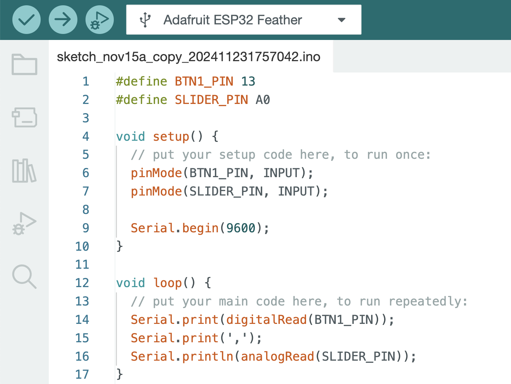
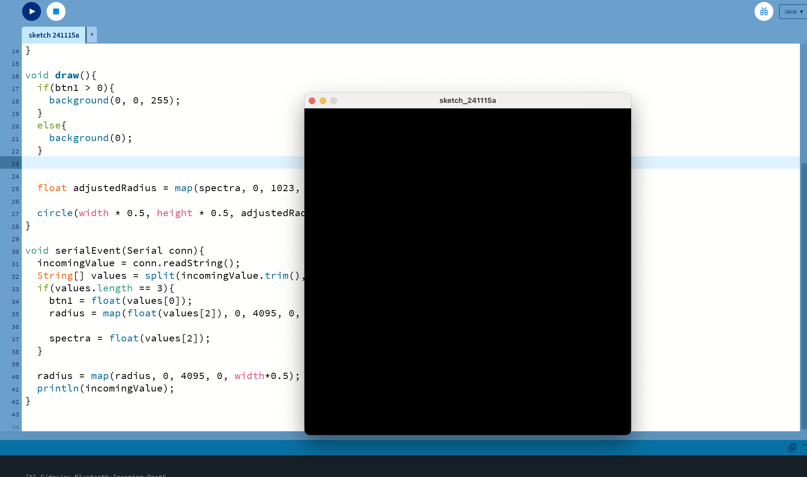
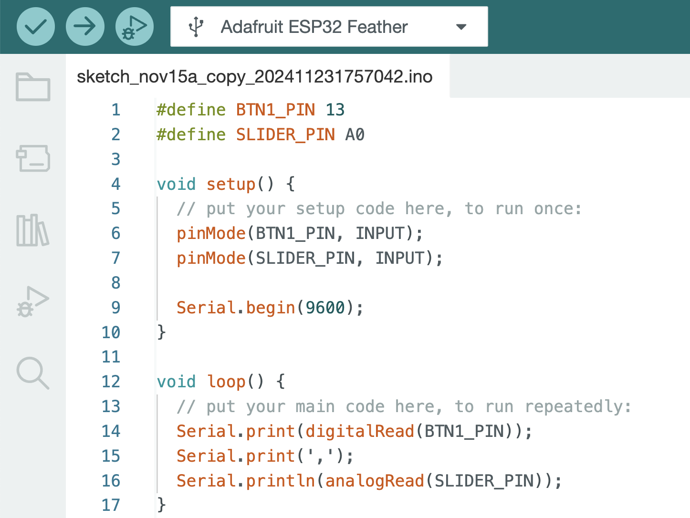
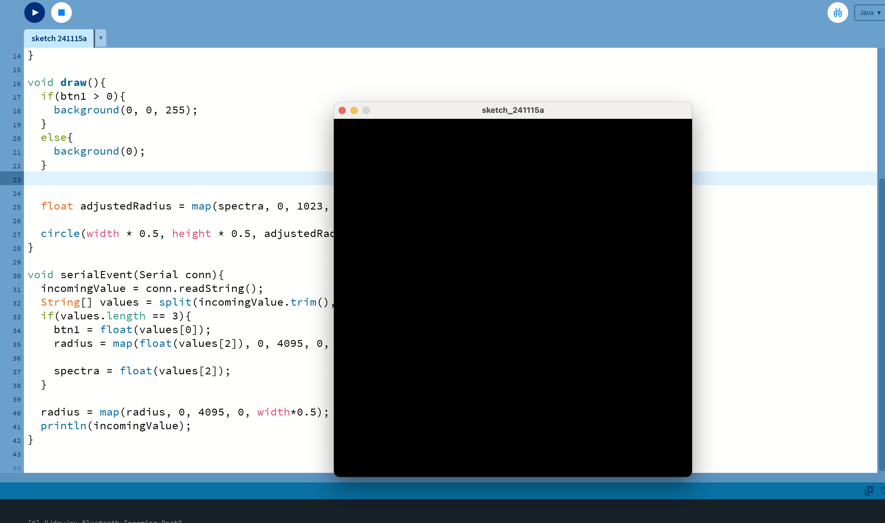

1. Connect sensors to Arduino.
Since "Spectra Symbol" sensor that I chose is analog sensor, I wrote "Slider Pin." And I connected the sensor to A0.
 
Since "Spectra Symbol" sensor that I chose is analog sensor, I wrote "Slider Pin." And I connected the sensor to A0.
 